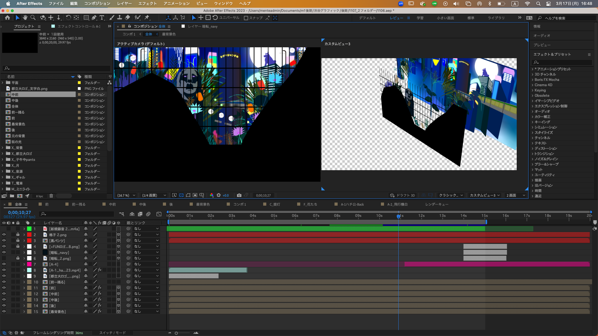
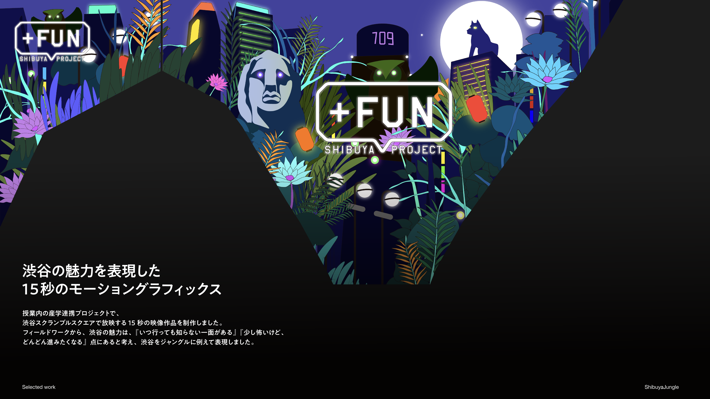
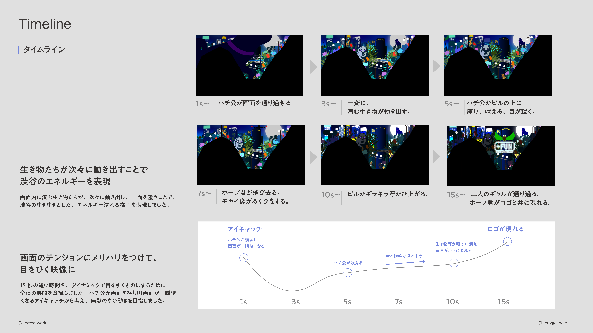

渋谷ジャングル
2024
Member: 3
Design category: motion design / movie
Role: video production
Achievements: Shibuya Scramble Square screenで上映
渋谷の魅力を表現した15秒のモーショングラフィックス
授業内の産学連携プロジェクトで、渋谷スクランブルスクエアで放映する15秒の映像作品を制作しました。フィールドワークから、渋谷の魅力は、『いつ行っても知らない一面がある』『少し怖いけど、どんどん進みたくなる』点にあると考え、渋谷をジャングルに例えて表現しました。渋谷スクランブルスクエアの特大モニターに2024年11月から1年の間、放送されました。
A 15-second motion graphics work expressing the appeal of Shibuya.
As part of a university–industry project, we produced a 15-second video for the large screen at Shibuya Scramble Square. From fieldwork we concluded that Shibuya’s appeal lies in “always revealing an unknown side” and “feeling a bit scary but making you want to go further”—we expressed it by likening Shibuya to a jungle. The work was broadcast on the giant monitor at Shibuya Scramble Square for one year from November 2024.